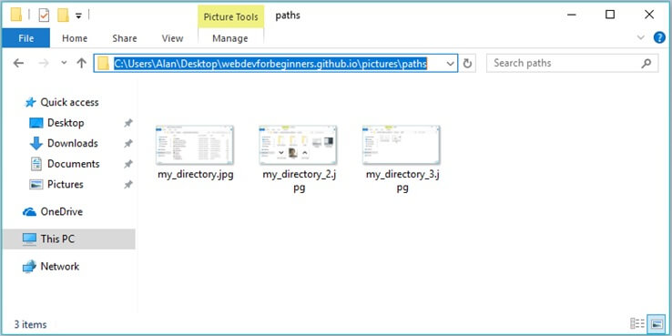

Relative And Absolute Paths Explained

Imagine you're standing in your room. If you wanted to get something in your room, like your sweater, you would know where it is. You don't need to retrace the route through your house to look for it. Likewise, if you wanted to go to another room, you would know exactly how to get there without having to start at the front door.
Now imagine you're not at home. But someone else who isn't familiar with your house is. (For the sake of this example, let's assume this person is someone you trust to be in your house without you.) You tell them* that you want them to get your sweater, which you left on your chair. When they open the front door, where do they turn? Which doorway or hallway do they go through? Which room do they enter? If you have a roommate, which chair is yours? These are details you have to lay out specifically so that the person can understand where to go in your house.
*I used to not be a fan of the singular they/them, but I guess it's becoming more accepted, if it isn't already. And we do use it all the time when we're speaking anyways.
The first example is the idea of a relative path. It is directions to a specific item or location "relative" to where you are.
The second example is the idea of an absolute path. Absolute because ... well I'm not really sure. I guess you could say that by giving the path, you are "absolutely" sure that whatever you are looking for will be there, regardless of where you are located.
You're not likely to use absolute paths, but it is good to know.
How does all this relate to HTML?
Image elements require a src and HTML/CSS linking requires a href. Both are locations to where a specific file is located.
This is what my folder for this website looks like at the moment I'm writing this tutorial. This webpage is "paths.html" so let's pretend you're that file.
You want to know what CSS rules to look at. Where you're standing, you see 4 css files. How do you know which one to use? Well, they're in the same room as you, so you can just call the one you're looking for by name. Therefore, the code to link the CSS file would be <link href="paths.css" rel="stylesheet">. "From where I'm standing, look for a file called 'paths.css'."
Let's say you want to add an image. Well, there aren't any images in the current room you're in. It looks like they're in "pictures". So far, the code for an image element would be <img src="pictures">.
Now we're in a different room. Namely, "pictures". If you wanted to use one of the pictures you see right now, the code would be <img src="pictures/up_arrow.png">. "From where I'm currently standing, go to "pictures", then there should be a file called 'up_arrow.png'."
Let's say you want to use a more relevant picture. You are paths.html, so logically, the picture you want would probably be in "paths".
The code would be <img src="pictures/paths/my_directory.jpg>. "From where I'm currently standing, go to pictures, then go to paths, then look for the file named 'my_directory.jpg."
If you wanted to use an absolute path for some reason, then click on the bar to get the path.
Then the src for an image element using an absolute path would be <img src="C:\Users\Alan\Desktop\webdevforbeginners.github.io\pictures\paths">. You could give these directions to anyone on the computer no matter where they are on it and they would be able to find the file you asked for.
For the first tutorial, I instructed you to make a folder on your desktop and put all your files (index.html, index.css, images) in that folder. Besides making it easy to manage your files, it also makes it easy to provide paths to things when making images or linking CSS files.
I hope that when I said, "Since index.css and index.html are in the same folder, the location is the name of the file." or "Since they are in the same folder, the path is just the name of the image file.", it makes more sense now.